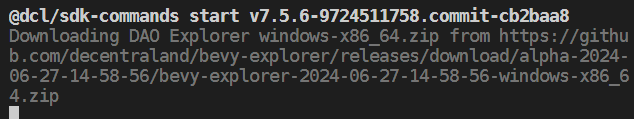

Introduction
Welcome to the DCL Explorer Book! This is a work-in-progress user guide for the Explorer funded by the DAO. Two clients are currently being developed, the Godot Explorer and the Bevy Explorer. The first targets a mobile explorer, and the second only a desktop.
This book provides more technical and creator-oriented information on using these Explorers. Since the April 2024 proposal passed, the Bevy Explorer has become part of our sandbox, where we can experiment with the Decentraland Protocol and discover a path to extending the current limitations.
Let's start with how to run a scene in the first section and then the possibility only available in the Bevy Explorer in the second section.
Developing with Bevy Explorer
If you're new to scene creation, we highly recommend starting with the Decentraland documentation. This will provide you with a solid foundation before diving into Bevy Explorer.
Setting Up a Scene
To set up a scene with Bevy Explorer and enable experimental features, follow these steps:
- Navigate to Your Scene's Root Folder: Open your terminal and navigate to the root folder of your scene.
- Install
protocol-squadbranch: Run the following command to install the necessary packages from the protocol-squad branch:npm install @dcl/sdk@protocol-squad @dcl/sdk-commands@protocol-squad --save-exact
Running a Preview with Bevy Explorer
To preview your scene using Bevy Explorer:
- Start the Preview: In your scene's root folder, run:
npm start
This will open Bevy Explorer with your scene running. Hot reloading is enabled, so any changes to the code or assets will automatically refresh the scene.
Note: the first time you run this in the scene, or if you delete the node_modules folder, the Bevy Explorer download takes place.

Updating the SDK and Bevy Explorer Version
To update the SDK and Bevy Explorer to the latest version:
- Reinstall Packages:
Repeat the installation command from the "Setting Up a Scene" section:
The SDK will update automatically if a new version of Bevy Explorer is required.npm install @dcl/sdk@protocol-squad @dcl/sdk-commands@protocol-squad --save-exact
Rolling Back to a Previous SDK Version
If you need to revert to the latest stable SDK version:
- Install Latest Stable Versions: In your scene's root folder, run:
npm install @dcl/sdk@latest @dcl/sdk-commands@latest --save-exact
Experimental Features
In this section, you can find the somehow for new features only available in the Bevy Explorer. These features might or might not be implemented by the Foundation client. At least this works as a research experiment, so the path is smoother than only having the conversation or feature request card.
Cinematic Camera
This experimental feature enables you to run a camera attached to an arbitrary entity.
What it changes
This proposal changed the CameraModeArea and AvatarModifierArea components.
CameraModeArea
Difference between experimental version and original one
declare const enum CameraType {
CT_FIRST_PERSON = 0,
CT_THIRD_PERSON = 1,
+ /** CT_CINEMATIC - controlled by the scene */
+ CT_CINEMATIC = 2
}
interface PBCameraModeArea {
/** the 3D size of the region */
area: Vector3 | undefined;
/** the camera mode to enforce */
mode: CameraType;
+ cinematicSettings?: CinematicSettings | undefined;
+ /** if true, the player will be considered inside the area when they are within 0.3m of the area. default true */
+ useColliderRange?: boolean | undefined;
}
+interface CinematicSettings {
+ /** Entity that defines the cinematic camera transform. */
+ cameraEntity: number;
+ /**
+ * Position -> camera's position
+ * Rotation -> camera's direction
+ * scale.z -> zoom level
+ * scale.x and scale.y -> unused
+ */
+ allowManualRotation?: boolean | undefined;
+ /** how far the camera can rotate around the y-axis / look left/right, in radians. default unrestricted */
+ yawRange?: number | undefined;
+ /** how far the camera can rotate around the x-axis / look up-down, in radians. default unrestricted */
+ pitchRange?: number | undefined;
+ /** note: cameras can never look up/down further than Vec3::Y */
+ rollRange?: number | undefined;
+ /** minimum zoom level. must be greater than 0. defaults to the input zoom level */
+ zoomMin?: number | undefined;
+ /** maximum zoom level. must be greater than 0. defaults to the input zoom level */
+ zoomMax?: number | undefined;
+}
Summary:
- It adds
CT_CINEMATICoption toCameraTypeenum which is used for the propertymodein theCameraModeAreacomponent. - It adds
cinematicSettingsanduserColliderRangeforCameraModeAreaproperties.
When CT_CINEMATIC is selected, the renderer uses the cinematicSettings. The main property for cinematic settings is the cameraEntity, which is the entity to which the camera will be attached.
The cameraEntity's Transform (which falls back to Transform.Identity) is used to take position and rotation and zoom by the scale.z value.
The other properties enable the player input for the camera controller with well-known ranges; if they are not assigned, the camera controller is disabled.
Note: The player input for the avatar is kept, and the player could accidentally exit the area. To avoid that, see the changes in AvatarModifierArea.
AvatarModifierArea
Work in progress
Difference between experimental version and original one
interface PBAvatarModifierArea {
/** the 3D size of the region */
area: Vector3 | undefined;
/** user IDs that can enter and remain unaffected */
excludeIds: string[];
/** list of modifiers to apply */
modifiers: AvatarModifierType[];
+ movementSettings?: AvatarMovementSettings | undefined;
+ /** if true, the player will be considered inside the area when they are within 0.3m of the area. default true */
+ useColliderRange?: boolean | undefined;
}
+interface AvatarMovementSettings {
+ controlMode?: AvatarControlType | undefined;
+ /** if not explicitly set, the following properties default to user's preference settings */
+ runSpeed?: number | undefined;
+ /** how fast the player gets up to speed or comes to rest. higher = more responsive */
+ friction?: number | undefined;
+ /** how fast the player accelerates vertically when not on a solid surface, in m/s. should normally be negative */
+ gravity?: number | undefined;
+ /** how high the player can jump, in meters. should normally be positive. gravity must have the same sign for jumping to be possible */
+ jumpHeight?: number | undefined;
+ /** max fall speed in m/s. should normally be negative */
+ maxFallSpeed?: number | undefined;
+ /** speed the player turns in tank mode, in radians/s */
+ turnSpeed?: number | undefined;
+ /** speed the player walks at, in m/s */
+ walkSpeed?: number | undefined;
+ /** whether to allow player to move at a slower speed (e.g. with a walk-key or when using a gamepad/joystick). defaults to true */
+ allowWeightedMovement?: boolean | undefined;
+}
Examples
Copy one of the following code to the index.ts and then run the Bevy Explorer preview with npm start.
Cinematic camera example with lemminiscate curve example
import { CameraModeArea, CameraType, engine, Entity, Material, MeshRenderer, PBCameraModeArea, Transform } from "@dcl/sdk/ecs";
import { Color3, Color4, Quaternion, Scalar, Vector3 } from "@dcl/sdk/math";
function colorAddAlpha(baseColor: Color4 | Color3, a: number): Color4 {
return { ...baseColor, a }
}
function createCameraModeArea(position: Vector3, size: Vector3, value: Partial<PBCameraModeArea>, debug: boolean = true) {
// When debug=true, it enables a box with alpha representation
if (debug) {
const height = 0.1
const floorRepresentationEntity = engine.addEntity()
const floorPosition = Vector3.create(position.x, position.y - size.y / 2 + height, position.z)
MeshRenderer.setBox(floorRepresentationEntity)
Material.setPbrMaterial(floorRepresentationEntity, { albedoColor: colorAddAlpha(Color4.Magenta(), 0.2) })
Transform.create(floorRepresentationEntity, { position: floorPosition, scale: Vector3.create(size.x, height, size.z) })
const areaRepresentationEntity = engine.addEntity()
MeshRenderer.setBox(areaRepresentationEntity)
Material.setPbrMaterial(areaRepresentationEntity, { albedoColor: colorAddAlpha(Color4.Green(), 0.1) })
const repPosition = Vector3.create(position.x, position.y, position.z)
Transform.create(areaRepresentationEntity, { position: repPosition, scale: size})
}
const entity = engine.addEntity()
CameraModeArea.create(entity, {
mode: CameraType.CT_FIRST_PERSON,
area: size,
...value,
})
Transform.create(entity, { position })
}
function createLemniscateMovement(centerPosition: Vector3, height: number, pathLength: number, periodSeg: number = 1.0, showDebug: boolean = false): Entity {
const movingEntity = engine.addEntity()
const systemName = `${movingEntity}-bernoulli-lemniscate-curve-movement-system`
const speedModifier = 2 * Math.PI / periodSeg
// A small debug box to show the position of the entity moved and the boundary of the path
if (showDebug) {
const debug = engine.addEntity()
const debugBoxSize = 0.1
MeshRenderer.setBox(debug)
Material.setPbrMaterial(debug, { albedoColor: Color4.Red() })
Transform.create(debug, { scale: Vector3.create(debugBoxSize, debugBoxSize, debugBoxSize), parent: movingEntity })
const debugArea = engine.addEntity()
MeshRenderer.setBox(debugArea)
Material.setPbrMaterial(debugArea, { albedoColor: colorAddAlpha(Color4.Magenta(), 0.2) })
Transform.create(debugArea, { scale: Vector3.create(pathLength, height, pathLength * Math.sqrt(2) / 4), position: {...centerPosition} })
}
let t = 0
const amplitude = pathLength / 2
engine.addSystem((dt) => {
const transform = Transform.getMutableOrNull(movingEntity)
// auto clean
if (!transform) {
engine.removeSystem(systemName)
return
}
// t is acummulated time but periodic each 2pi
t = Scalar.repeat(t + (speedModifier * dt), 2 * Math.PI)
const ct = Math.cos(t)
const st = Math.sin(t)
const previousPos = {...transform.position}
// lemminiscate curve
transform.position.x = centerPosition.x + (amplitude * ct / (1 + (st * st)))
transform.position.z = centerPosition.z + (amplitude * ct * st / (1 + (st * st)))
// sin square
transform.position.y = centerPosition.y - height / 2 + (height * Math.sin(t/2) * Math.sin(t/2))
// rotation calculated from the previous position (with forward vector)
Quaternion.fromLookAtToRef(previousPos, transform.position, Vector3.Up(), transform.rotation)
}, 0, systemName)
// Initial position
Transform.create(movingEntity, { position: {...centerPosition} })
return movingEntity
}
export function main() {
console.log("## Cinematic Example Test ##")
// Camera area position and size
const cameraAreaPosition = Vector3.create(4, 2.5, 4)
const cameraAreaSize = Vector3.create(3, 3, 3)
// Movement parameters
const movementCenteredPosition = Vector3.create(8, 2, 8)
const pathHeight = 1.0
const pathLength = 4.0
const periodSeg = 6
const movingEntity = createLemniscateMovement(movementCenteredPosition, pathHeight, pathLength, periodSeg, true)
createCameraModeArea(cameraAreaPosition, cameraAreaSize, {
mode: CameraType.CT_CINEMATIC,
cinematicSettings: {
cameraEntity: movingEntity
}
})
}
Scrollable UI
This experimental feature enables you to add scrollbars to UI in case of overflow the container size.
What it changes
This proposal changed the UiTransform and add a new component UiScrollResult.
UiTransform
Difference between experimental version and original one
+/**
+ * @public
+ * The scroll-visible determines if the scrollbars are shown when the scroll overflow is enabled
+ */
+export type ScrollVisibleType = 'horizontal' | 'vertical' | 'both' | 'hidden'
export interface UiTransformProps {
...,
+ /** A reference value to identify the element, default empty */
+ elementId?: string
+ /** default position=(0,0) if it aplies, a vector or a reference-id */
+ scrollPosition?: Vector2 | string
+ /** default ShowScrollBar.SSB_BOTH */
+ scrollVisible?: ScrollVisibleType
}
Summary:
- It adds
elementIdto identify each UI element, it's a unique identifier. You can use it to identify outside the UI system, or to reference it in thescrollPosition - It adds
scrollPositionto manually set the current scroll position. It can be a normalized 2D vector (0-1, 0-1) or a string to reference another UI element. - It adds
scrollVisibleto set the bars visibility
UiScrollResult
+export interface PBUiScrollResult {
+ value: PBVector2 | undefined;
+}
The value indicates how scrolled is the container where 0.0 is at the beginning and 1.0 full scrolled. The x-value is for horizontal axes and y-value for the vertical one.
Examples
Copy one of the following code to the index.ts and then run the Bevy Explorer preview with npm start.
Scrollable UI with a Scroll Container

import ReactEcs, { Label, UiEntity } from '@dcl/react-ecs'
import { UiScrollResult, UiTransform, engine } from '@dcl/sdk/ecs'
import { Color4 } from '@dcl/sdk/math'
import { Button, Input, ReactEcsRenderer } from '@dcl/sdk/react-ecs'
import { type Vector2 } from '~system/EngineApi'
class UiExample {
// autoincrement counter, only for demonstration purposes
private counter: number = 0
// target for scroll position
private target: string | Vector2 = { x: 0.5, y: 0.5 }
// text to display in the scroll controller
private scrollText = 'indeterminated'
// id of the scroll container, to identify it in the controller
private readonly scrollContainerId = 'my-scroll-container-A'
constructor() {
engine.addSystem(this.controllerSystem.bind(this))
}
controllerSystem(): void {
for (const [, pos, uiTransform] of engine.getEntitiesWith(
UiScrollResult,
UiTransform
)) {
if (uiTransform.elementId !== this.scrollContainerId) {
continue
}
if (pos.value === undefined) {
break
}
if (pos.value.y <= 0) {
this.scrollText = 'top'
} else if (pos.value.y >= 1) {
this.scrollText = 'bottom'
} else if (pos.value.y < 0.5) {
this.scrollText = 'near top'
} else {
this.scrollText = 'near bottom'
}
if (pos.value.x <= 0) {
this.scrollText += ' left'
} else if (pos.value.x >= 1) {
this.scrollText += ' right'
} else {
this.scrollText += ' middle'
}
}
this.counter++
}
// This UI is only for demonstration purposes, not the focus of this example
ScrollController(): ReactEcs.JSX.Element {
return (
<UiEntity
uiTransform={{
flexDirection: 'column',
position: { left: '25%', top: '10%' },
width: '200',
height: '300',
justifyContent: 'space-evenly',
alignItems: 'center'
}}
uiBackground={{ color: Color4.create(0.0, 0.0, 0.0, 1.0) }}
>
<Label value="Scroll controller" color={Color4.Green()} fontSize={14} />
<Button
fontSize={16}
uiTransform={{ width: '80%' }}
value="Focus first item"
onMouseDown={() => {
this.target = 'first'
}}
/>
<Button
fontSize={16}
uiTransform={{ width: '80%' }}
value="Focus second item"
onMouseDown={() => {
this.target = 'second'
}}
/>
<Label
fontSize={16}
value={`Currently:\n${this.scrollText}`}
color={Color4.White()}
/>
<Input
fontSize={16}
uiTransform={{ width: '90%' }}
placeholder="type target"
onChange={(value) => {
console.log(`change ${value}`)
this.target = value
}}
onSubmit={(value) => {
console.log(`submit ${value}`)
this.target = value
}}
/>
</UiEntity>
)
}
Scrolly(): ReactEcs.JSX.Element {
return (
<UiEntity
uiTransform={{
flexDirection: 'column',
alignItems: 'center',
justifyContent: 'space-between',
positionType: 'absolute',
width: '400',
height: '600',
position: { right: '8%', bottom: '3%' },
// new properties
overflow: 'scroll', // enable scrolling
scrollPosition: this.target, // if you want to set the scroll position programatically (maybe an action from the user)
elementId: this.scrollContainerId // id to identify the scroll result if you need to
}}
uiBackground={{
color: Color4.White()
}}
>
<Label
uiTransform={{
height: 'auto',
width: 'auto',
margin: '200px',
padding: `10px`,
// new property: we set the id, it must be unique, and we will use it to identify the scroll position
elementId: 'first'
}}
value={`first (${this.counter})`}
color={Color4.Black()}
fontSize={18}
textAlign="middle-center"
key="first"
/>
<Label
uiTransform={{
height: 'auto',
width: 'auto',
margin: '200px',
padding: `10px`,
// new property: we set the id, it must be unique, and we will use it to identify the scroll position
elementId: 'second'
}}
value="second"
color={Color4.Black()}
fontSize={18}
textAlign="middle-center"
/>
<Label
uiTransform={{
height: 'auto',
width: 'auto',
margin: '200px',
padding: `10px`,
// new property: we set the id, it must be unique, and we will use it to identify the scroll position
elementId: 'third'
}}
value="third"
color={Color4.Black()}
fontSize={18}
textAlign="middle-center"
/>
<Label
uiTransform={{
height: 'auto',
width: 'auto',
margin: '200px',
padding: `10px`,
// new property: we set the id, it must be unique, and we will use it to identify the scroll position
elementId: 'fourth'
}}
value="fourth"
color={Color4.Black()}
fontSize={18}
textAlign="middle-center"
/>
<Label
uiTransform={{
height: 'auto',
width: 'auto',
margin: '200px',
padding: `10px`,
// new property: we set the id, it must be unique, and we will use it to identify the scroll position
elementId: 'fifth'
}}
value="fifth"
color={Color4.Black()}
fontSize={18}
textAlign="middle-center"
/>
</UiEntity>
)
}
render(): ReactEcs.JSX.Element[] {
return [this.Scrolly(), this.ScrollController()]
}
}
export function main(): void {
const ui = new UiExample()
ReactEcsRenderer.setUiRenderer(ui.render.bind(ui))
}
Exposing internal GLTF nodes
This experimental feature enables you to access to the internal structure of a GLTF/GLB. Some of the use cases are:
- Use pointer events for specific colliders inside the GLTF
- Make code-animations (by modifying internal nodes transform)
- Modify internal materials
- Use internal meshes and put a video texture
- Not guessing the animation clip names (now you can fetch the animation list)
- Attach to internal entities
What it changes
This proposal:
- Add properties into the
GltfLoadingStateto be able to fetch the internal structure - Add the
GltfNodeandGltfNodeStatecomponent - Add the
gltfproperty in theMaterialcomponent - Add the
GltfMeshoption to theMeshRendererandMeshCollider
GltfLoadingState
Difference between experimental version and original one
export interface PBGltfContainerLoadingState {
+ animationNames: string[];
currentState: LoadingState;
+ materialNames: string[];
+ meshNames: string[];
+ nodePaths: string[];
+ skinNames: string[]; // @deprecated this will not be finally used
}
Summary:
- It adds the
animationNamesproperty, here you have the entire list of animation available from your GLTF - It adds the
materialNamesproperty, you can fetch the material name to be referenced in the material'sgltfproperty - It adds the
meshNamesproperty, you can fetch the mesh name to be referenced in the MeshRenderer and MeshCollidergltfproperty - It adds the
nodePathsproperty, you can fetch the node name to be referenced in the GltfNodepathproperty
Material
Difference between experimental version and original one
export interface PBMaterial {
+ gltf?: PBMaterial_GltfMaterial | undefined;
material?: {
$case: "unlit";
unlit: PBMaterial_UnlitMaterial;
} | {
$case: "pbr";
pbr: PBMaterial_PbrMaterial;
} | undefined;
}
Summary:
- It adds the
gltfmaterial reference, you can reference a material inside a GLTF exposed inGltfLoadingState.materialNames. When the gltfMaterial is set, the fallback values for undefinedpbrorunlitare the GLTF ones instead of the default specified in the documentation. If you want to set the original default, you have to do it explicitly.
MeshRenderer
Difference between experimental version and original one
+ MeshRenderer.setGltfMesh(...)
+ /**
+ * @public
+ * Set a gltf internal mesh in the MeshCollider component
+ * @param entity - entity to create or replace the MeshRenderer component
+ * @param source - the path to the gltf
+ * @param meshName - the name of the mesh in the gltf
+ */
+ setGltfMesh(entity: Entity, source: string, meshName: string, colliderLayers?: ColliderLayer | ColliderLayer[]): void
Summary:
- Now you can set a MeshRenderer from a mesh resource inside a GltfContainer
MeshCollider
Difference between experimental version and original one
+ MeshCollider.setGltfMesh(...)
+ /**
+ * @public
+ * Set a gltf internal mesh in the MeshCollider component
+ * @param entity - entity to create or replace the MeshCollider component
+ * @param source - the path to the gltf
+ * @param meshName - the name of the mesh in the gltf
+ * @param colliderMask - the set of layer where the collider reacts, default: Physics and Pointer
+ */
+ setGltfMesh(entity: Entity, source: string, meshName: string, colliderLayers?: ColliderLayer | ColliderLayer[]): void
Summary:
- Now you can set a MeshCollider from a mesh resource inside a GltfContainer
GltfNode and GltfNodeState
Experimental component added diff
+export interface PBGltfNode {
+ path: string;
+}
+export interface PBGltfNodeState {
+ error?: string | undefined;
+ state: GltfNodeStateValue;
+}
+export const enum GltfNodeStateValue {
+ GNSV_FAILED = 1,
+ GNSV_PENDING = 0,
+ GNSV_READY = 2
+}
These new two components are used to map a internal gltf node into an Entity. It MUST be a child from the GltfContainer and after you create the component, the renderer will create the Transform, Material, MeshRenderer and MeshCollider if apply. This enables you to receive the updates in case an animation is playing and that node is affected, or to modify them by yourself.
Note: Skinned meshes are not supported independently from a GltfContainer as they rely on bone nodes in the gltf, but you can load a GLTF containing a skinned mesh and link to the mesh node.
Examples
You can check the examples scenes in the examples repo
The folders starting with gltf-example are the ones using this experimental feature.
In World UI
This feature introduces the UiCanvasTexture option and PBUiCanvas component, enabling developers to create and render UI elements onto a texture that can be used within the 3D world.
What it changes
This proposal:
- Adds the
UiCanvasTextureoption forTexture, allowing you to link a UI entity to a texture and configure properties such as wrap mode and filter mode. - Adds the
UiCanvascomponent, allowing the definition of the dimensions and background color of the UI canvas and to use as the root entity for an defined UI. - Updates the
TextureUnionto include the newUiCanvasTextureoption. - Introduces new methods in the
ReactEcsRendererfor setting up UI textures.
PBUiCanvas
New typescript declaration
+ export interface PBUiCanvas {
+ color?: PBColor4 | undefined;
+ height: number;
+ width: number;
+ }
Summary:
- It adds the
PBUiCanvasmessage, which allows you to define the width, height, and optional background color of the canvas. The color defaults to transparent (0, 0, 0, 0) if not provided. - The canvas can be attached to a root entity, and the properties such as width, height, and color can be adjusted according to your needs.
TextureUnion
Difference between experimental version and original one
export interface TextureUnion {
// (undocumented)
tex?: {
$case: "texture";
texture: Texture;
} | {
$case: "avatarTexture";
avatarTexture: AvatarTexture;
} | {
$case: "videoTexture";
videoTexture: VideoTexture;
+ } | {
+ $case: "uiTexture";
+ uiTexture: UiCanvasTexture;
} | undefined;
}
Summary:
- The
TextureUnioninterface is updated to includeuiTexture, enabling the attachment of a UI canvas to a texture.
ReactEcsRenderer
New methods added to ReactEcsRenderer
+ interface ReactEcsRenderer {
+ setTextureRenderer: (entity, ui) => void
+ }
Summary:
- The
ReactEcsRendererinterface now provides thesetTextureRenderermethod, allowing developers to set a texture renderer for a specific entity that is linked to a UI canvas.
Example Usage
The following is an example of how to use the UiCanvasTexture and PBUiCanvas in practice.
// true for test in-world-ui and false to get the regular ui
const useTexture = true
// Initialize the UI
const ui = new UiExample()
// Create an entity to serve as the UI canvas
const uiCanvas = engine.addEntity();
if (useTexture) {
// Create a UI canvas with specified width, height, and background color
UiCanvas.create(uiCanvas, { width: 1024, height: 1024, color: Color4.Black() });
// Set the texture renderer to the created canvas
ReactEcsRenderer.setTextureRenderer(uiCanvas, ui.render.bind(ui));
} else {
// Set the default UI renderer
ReactEcsRenderer.setUiRenderer(ui.render.bind(ui));
}
This example demonstrates how to create and render a UI canvas texture in a virtual world. You can either use the in-world UI as a texture applied to a 3D object or render a regular 2D UI.
Examples
You can find example scenes demonstrating the use of the new lighting components in the examples repo.
Look for folders prefixed with in-world-ui for examples using this feature.
Lights
This feature introduces enhanced control over lighting in your scenes, allowing developers to modify global light settings, as well as create point lights and spotlights attached to non-root entities. Some key use cases include:
- Override the default global directional light (sunlight) for dynamic lighting environments
- Create point lights (e.g., lightbulbs) or spotlights for localized light sources
- Control shadows, brightness, and color for more realistic scene rendering
Also this new feature is integrated with the Exposing internal GLTF nodes allowing modyfing Lights from GLTF or add to entities there as well.
What it changes
This proposal:
- Adds the
PBLightcomponent for defining both global and local light sources - Adds the
PBSpotlightcomponent for creating spotlights - Adds the
PBGlobalLightcomponent for controlling scene-wide ambient and directional light settings (only for Root entity)
PBLight
New declaration
+export interface PBLight {
+ color?: PBColor3 | undefined;
+ enabled?: boolean | undefined;
+ illuminance?: number | undefined;
+ shadows?: boolean | undefined;
+}
Summary:
- The
PBLightcomponent introduces a flexible interface for defining light sources. Lights can be enabled or disabled, adjusted for brightness (illuminance), and set to cast or ignore shadows. - Lights can be attached to non-root entities to simulate localized light effects like lamps or bulbs.
- The
colorproperty allows you to specify the light color using thePBColor3format.
Illuminance
The illuminance property defines the light’s brightness in lux (lumens/m²). For global directional lights, this is applied uniformly. For point or spotlights, this specifies the illuminance at a 1m distance from the light source.
Shadows
The shadows property toggles whether a light casts shadows. The engine may limit the number of lights casting shadows based on performance settings.
PBSpotlight
New Declaration
+export interface PBSpotlight {
+ angle: number;
+ innerAngle?: number | undefined;
+}
Summary:
- The
PBSpotlightcomponent turns a point light into a spotlight, emitting light in a cone defined by theangleproperty. - Use the
innerAngleproperty to define a smooth fall-off for light intensity within the spotlight cone. - Spotlights are useful for simulating directional light sources like torches or headlights.
Angle
The angle property (in radians) defines the width of the cone in which the light is emitted. For example, a typical torch would have an angle of around 0.15.
Inner Angle
The innerAngle defines the core area of maximum brightness. The light intensity decreases smoothly between the innerAngle and angle.
PBGlobalLight
New Declaration
+export interface PBGlobalLight {
+ ambientBrightness?: number | undefined;
+ ambientColor?: PBColor3 | undefined;
+ direction?: PBVector3 | undefined;
+}
Summary:
- The
PBGlobalLightcomponent allows you to adjust the global ambient and directional lighting for the entire scene. - You can modify the ambient light's brightness (
ambientBrightness) and color (ambientColor), which are applied uniformly across the scene. - The
directionproperty changes the angle at which the global directional light (e.g., sunlight) is cast.
Direction
Use the direction property to define the directional light’s vector in the scene. This is especially useful for controlling the sunlight's position based on the time of day or desired atmosphere.
Ambient Light
The ambientColor and ambientBrightness properties control the global ambient lighting. Ambient light affects the entire scene and is not tied to any particular light source.
Examples
You can find example scenes demonstrating the use of the new lighting components in the examples repo.
Look for folders prefixed with lights for examples using this feature.
Mobile explorers
Work in progress
Help and community
You can ask for help in the following server:
- Our own Discord server DCL Explorer Discord invitation link
- The
#sdk-supportchannel in the Decentraland DAO Discord server invitation link